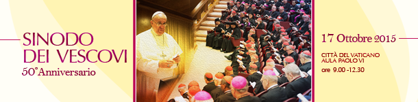

www.synod.va
XVI Assemblea Generale Ordinaria del Sinodo dei
Vescovi “Per una Chiesa sinodale: comunione, partecipazione
e missione”
Assemblea Speciale del Sinodo dei Vescovi per la Regione Panamazzonica (6-27 ottobre 2019) www.sinodoamazonico.va
- Chiusura dei lavori dell'Assemblea Speciale del Sinodo dei Vescovi per la Regione Panamazzonica sul tema “Nuovi cammini per la Chiesa e per una ecologia integrale” (26 ottobre 2019)
[Spagnolo]
XV Assemblea Generale Ordinaria del Sinodo dei Vescovi (3-28 ottobre 2018)

XIV Assemblea Generale Ordinaria del Sinodo dei Vescovi (4-25 ottobre 2015)
Canale a cura della Sala Stampa della Santa Sede
-
Instrumentum Laboris - «La vocazione e la missione della famiglia nella Chiesa e nel mondo contemporaneo» (23 giugno 2015)
[Francese, Inglese, Italiano, Portoghese, Spagnolo, Tedesco]
-
Lineamenta "La vocazione e la missione della famiglia nella Chiesa e nel mondo contempoaneo"
[Francese, Inglese, Italiano, Kiswahili, Portoghese, Spagnolo, Tedesco]
III Assemblea Generale Straordinaria del Sinodo dei Vescovi (5-19 ottobre 2014)
XIII Assemblea Generale Ordinaria del Sinodo dei Vescovi (7-28 ottobre 2012)
- Instrumentum Laboris - «La nuova evangelizzazione per la trasmissione della fede cristiana» (19 giugno 2012)
[Francese, Inglese, Italiano, Latino, Polacco, Portoghese, Spagnolo, Tedesco]
- Lineamenta "La nuova evangelizzazione per la trasmissione della fede cristiana"
[Francese, Inglese, Italiano, Latino, Polacco, Portoghese, Spagnolo, Tedesco]
Assemblea Speciale per il Medio Oriente (10-24 ottobre 2010)
[Arabo, Francese, Inglese, Italiano, Portoghese, Spagnolo, Tedesco]
* * * II Assemblea Speciale per l'Africa (4-25 ottobre 2009)
-
Presentazione di Sua Eccellenza Mons. Nikola Eterović, Segretario Generale del Sinodo dei Vescovi, dell'Esortazione Apostolica Postsinodale Africae munus (Ouidah, 19 novembre 2011)
[Francese, Inglese, Italiano, Spagnolo]
-
Visita del Santo Padre alla Basilica dell'Immacolata Concezione di Maria di Ouidah e firma dell'Esortazione Apostolica Post-Sinodale (19 novembre 2011) (Video)
[Francese, Inglese, Italiano, Polacco, Portoghese, Spagnolo, Tedesco]
* * * XII Assemblea Generale Ordinaria del Sinodo dei Vescovi (5-26 ottobre 2008)
- Verbum Domini: Esortazione Apostolica Postsinodale sulla Parola di Dio nella vita e nella missione della Chiesa (30 settembre 2010)
[Francese, Inglese, Italiano, Latino, Polacco, Portoghese, Spagnolo, Tedesco]
- Cappella Papale per la conclusione della XII Assemblea Generale Ordinaria del Sinodo dei Vescovi: Omelia del Santo Padre Benedetto XVI (26 ottobre 2008)
[Francese, Inglese, Italiano, Portoghese, Spagnolo, Tedesco]
- Relatio post disceptationem del Relatore Generale, S.Em.R. il Sig. Card. Marc Ouellet, P.S.S., Arcivescovo di Québec (Canada) (15 ottobre 2008)
[Francese, Latino]
- Relatio ante disceptationem del Relatore Generale, S.Em.R. il Sig. Card. Marc Ouellet, P.S.S., Arcivescovo di Québec (Canada) (6 ottobre 2008)
[Francese, Latino]
- Lineamenta "La Parola di Dio nella vita e nella missione della Chiesa"
[Arabo, Cinese tradizionale, Cinese semplificato, Francese, Inglese, Italiano, Latino, Polacco, Portoghese, Spagnolo, Tedesco]
* * *
* * * XI Assemblea Generale Ordinaria del Sinodo dei Vescovi (2-23 ottobre 2005)
* * *
- Conferenza stampa di presentazione dell' Esortazione Apostolica Post-Sinodale "Ecclesia in Europa" (28 giugno 2003)
- Intervento del Cardinale Antonio María Rouco Varela, Arcivescovo di Madrid
[Spagnolo]
- Promulgazione dell’Esortazione Apostolica Post-Sinodale "Ecclesia in Oceania" (22 novembre 2001)
- Assemblea Speciale per l'Oceania, 1998: Instrumentum Laboris
[Francese, Inglese]
- Messaggio dell'Assemblea Speciale per l'Asia del Sinodo dei Vescovi (14 maggio 1998)
[Spagnolo]
- Assemblea Speciale per l'Asia, 1998: Instrumentum Laboris
[Francese, Inglese]
- Sinodo Straordinario dei Vescovi Ucraini (24-27 marzo 1980):
- Lettera di convocazione (1° marzo 1980)
[Latino]
- Sinodo particolare dei Vescovi dei Paesi Bassi:
- La giustizia nel mondo (30 novembre 1971)
[Portoghese]
|